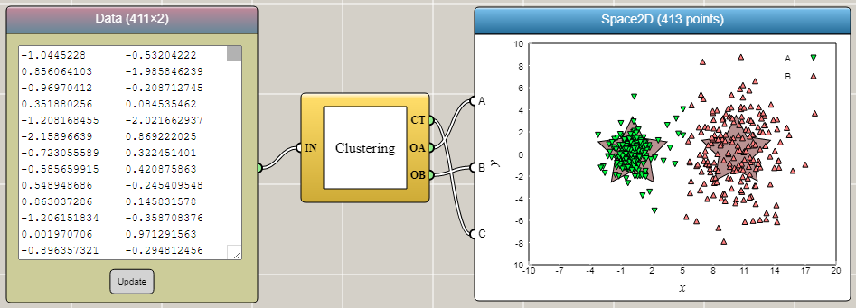
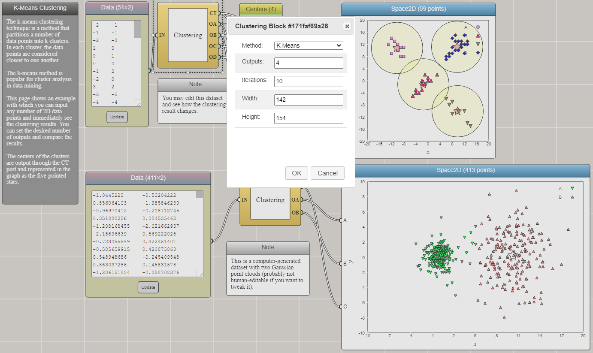

Working with API Blocks in iFlow
By Charles Xie
In computer science, application programming interfaces (APIs) refer to ways to use software modules without being concerned about their internal details. The user only needs to know how to specify the inputs to get desirable outputs. In the simplest case, an API can be thought of just as a function, which looks like this in JavaScript:
function sum(a, b) {
return a + b;
}
Although this example is extremely simple, we can still consider it as an API that takes two variables as the inputs and returns their sum as the output. By calling this API, we get the service of the function — adding two numbers. No matter how complex an API may be, the basic idea is similar to what this simple example illustrates.
Using Existing API Blocks
A typical iFlow block can be considered as an API to some kind of functionality.
Let's use the API provided by the Clustering block as an example. In the two-dimensional case, it takes two columns of numbers as the sole input and separates them into multiple clusters
based on the Euclidean distance.
The outputs are arrays of clusterized numbers and their centers. If we use JavaScript, we may need to do some pretty high-level programming shown in the following code box
(which may be off-putting to some beginners).
But with iFlow, this seemingly complicated task is reduced to simply connecting an Array Input block to the input port IN on the left side of the Clustering block and then connect the output ports
CT, OA, and OB on the right side of the Clustering block to the input ports A, B, and C of a Space2D block for
visualizing the results immediately.
All you need to know is that port CT outputs the centers of the clusters, port OA outputs an array of data in the first cluster,
and port OB outputs an array of data in the second cluster. The three ports A, B, and C of the Space2D block each take an array of 2D points for plotting.
Once you connect the output ports from the Clustering block to them, the data arrays are automatically accepted and instantaneously shown as a scatter plot inside the Space2D block.
Easy peasy!
import clustering from 'clusters';
...
...
const data = await read(filePath);
clustering.setData(data);
const results = clustering.getClusters();
for(const cluster of results) {
// do something about each cluster
}
...
...
...
|
 |
The construction of the above iFlow diagram is a one-time thing. Once you set it up, clusterizing another dataset requires nothing but three simple steps: 1) Clear the current input data in the Array Input block by selecting all and pressing the Delete key, 2) Copy the new data and paste it into the block by pressing Ctrl+V, and 3) Press the Update button at the bottom of the block to confirm the input data. Hence, this example also highlights the efficiency and reusability of iFlow — even for data scientists!
Primary Parameters vs. Secondary Parameters
A typical API block may have many parameters for the user to set. The input ports represent the primary parameters that are essential to the functionality of the block. They are the most important factors that need to be considered in the computational thinking of the problem. The rest of the parameters, the secondary parameters, can be set through the Properties Window of the block. The secondary parameters can affect the result of the computation, but they are not as essential as the primary ones. For example, we may want to specify the number of clusters that the dataset should be classified into, which is a secondary parameter. Setting this parameter to different values may lead to different results, but it usually does not cause the iFlow diagram to stop working altogether. But if we make mistakes in connecting the input and output ports among the blocks, chances are that our diagram will not work properly.
To set the secondary parameters for the Clustering block, we can open its Properties Window as follows. There we can have more options. The same thing can be done with the Space2D block to increase its input ports and customize the scatter plot as necesssary.

Click HERE to play with the above example
Defining Your Own API Blocks
Sometimes, you may want to define your own API blocks as there is no existing block that meets your needs. iFlow allows you to create your own API blocks. (To be continued...)